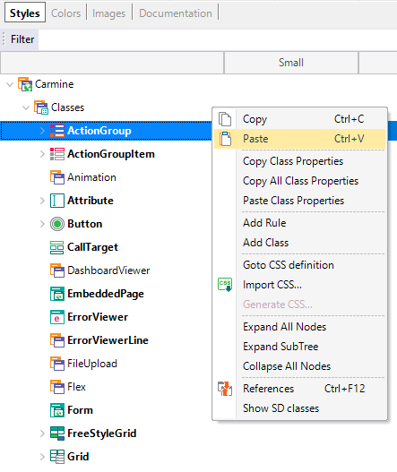
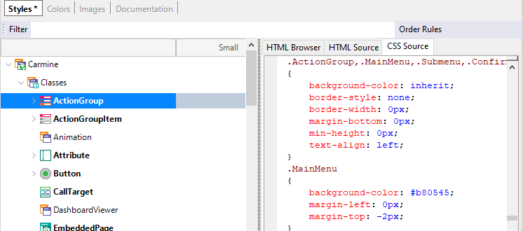

Right-clicking on the treeview items of the Theme Editor opens the following menu:

- Copy class properties. This option copies only the non-default class properties.
- Copy all class properties. Copies all the property values (default and non-default).
- Paste class properties. After having copied the class properties of another class, paste them at the selected class.
- Add rule. (Only Web). Add a CSS rule. For more information, see Conditional Class Properties for Themes.
- Add class. This allows adding a new class to the selected class (or subclass). This child class inherits the properties of the parent class. See Theme Classes for more information.
- Go to CSS definition. (Only Web). Show the CSS definition on the right-hand panel.

- Import CSS. (Only Web). Opens an editor panel to enter a CSS definition to be imported into the selected class. See Import CSS option for Theme classes.
- Show/Hide SD/Web classes. By default, a Web Theme object displays only the Web classes. With this option, you can show or hide Mobile classes. The same happens with the Theme object for Web classes. For more information, read Theme menu option: Show / Hide Classes.
|